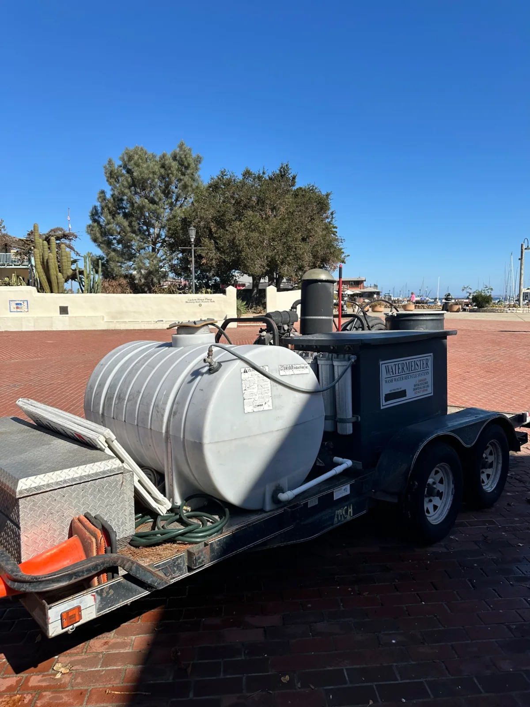

Capture with suction
Collect the water generated during pressure washing to help keep it and the dirt it carries away from storm drains.
ECO-FRIENDLY CLEANING ON THE MONTEREY PENINSULA
Our commercial water recapture system combines suction, filtration and water reuse. It is an important part of how we approach exterior cleaning in our coastal community.

OUR EQUIPMENT, OUR APPROACH
Pressure washing lifts dirt and debris from a surface. We use suction to collect the wash water rather than leaving it to flow toward storm drains.
The captured water passes through our filtration system so it can be reused for cleaning. Reusing water helps reduce the need for fresh water while keeping recovered wash water under control.
Here on the Monterey Peninsula, caring for the places we clean also means caring for our local ocean and marine life. Reducing wash-water runoff is part of that commitment.
THE RECAPTURE PROCESS
Collect the water generated during pressure washing to help keep it and the dirt it carries away from storm drains.
Our filtration equipment treats the recovered wash water for reuse in the cleaning process.
Recirculate suitable filtered water to reduce fresh-water demand. The setup is selected for the surface and job conditions.
Tell us about your storefront, sidewalk, parking area or other exterior space. Steve and Aidan can explain how water recapture fits your cleaning plan.
Get a free on-site estimate